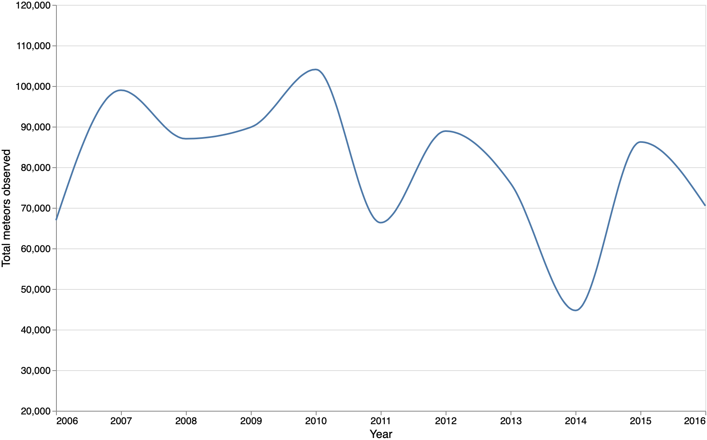
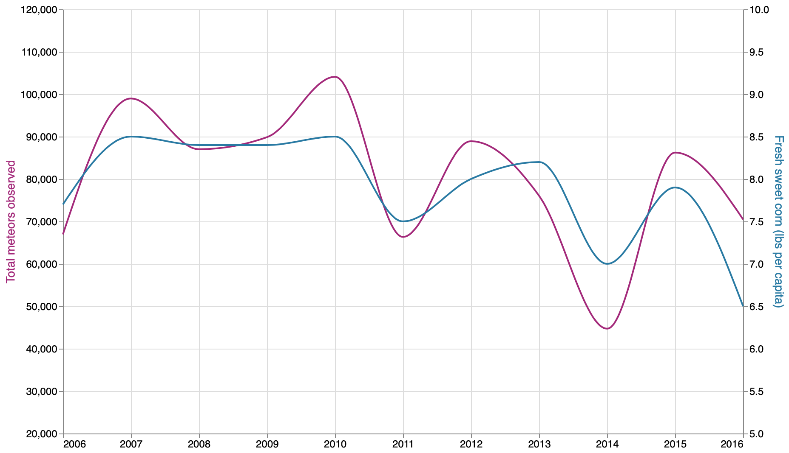
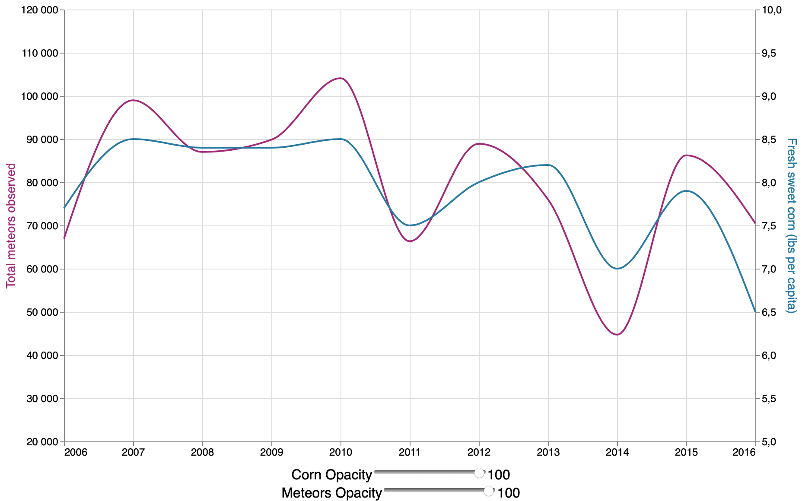
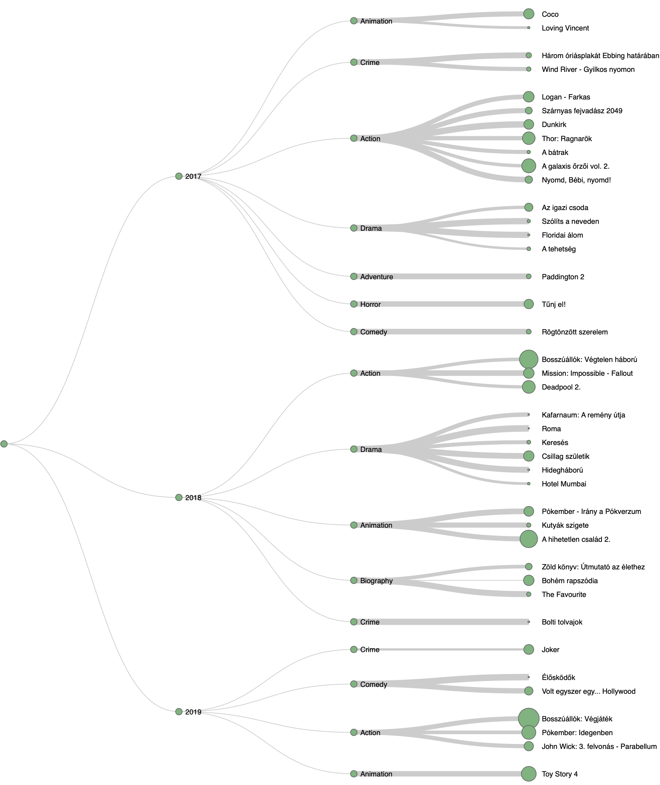

Vega és Vega-Lite
MOME Open Adatvizualizáció 2023.
Vega és Vega-Lite
- UW Interactive Data Lab fejlesztése
- deklaratív formátum (JSON)
- HTML canvas vagy SVG kimenet
- interaktív
- elmenthető képként (SVG vagy PNG)
- megosztható kódként vagy Vega Editorban
- rengeteg eszköz, integrációs lehetőség, programkönyvtár
Vega vs Vega-Lite
Vega-Lite
- magasabb szintű
- általános diagramtípusok
- egyszerű adattranszformációk
- rövidebb specifikáció
- automatikus tengelyek, skálák és jelmagyarázatok
Vega vs Vega-Lite
Vega
- alacsonyabb szintű
- egyedi vizualizációkat tesz lehetővé
- bonyolultabb interakciók és adattranszformációk lehetségesek
- erre a formátumra fordíthatók le a Vega-Lite specifikációk, így továbbfejleszthetők
Vega-Lite
A specifikáció részei
- data: inline, külső fájl (CSV, JSON, TopoJSON), named/streaming data
- mark: alapvető grafikai elem típusa, egyben meghatározza a diagram típusát is
- encoding: adatok és vizuális tulajdonságok kapcsolata
- parameters: felhasználói interakció
- config: konzisztens vizuális témát lehet kialakítani – axis, legend, mark, stb. egyéb tulajdonságok: width, height, padding, stb.
Vega-Lite
Data
- inline data: values tulajdonság, kevés adat esetén (vagy teszt, prototípus kialakítása során) használható
- URL: JSON, CSV, TopoJSON adatok betöltése külső forrásból generátorok: sequence, graticule, sphere
- named source: programmatikusan előállított ill. API-ból lekérdezett adatok
Vega-Lite
Transform
- objektumok tömbje
- sorban végrehajtott transzformációkat tartalmaz
- aggregate, bin, filter, stb.
Vega-Lite
Mark
- alapvető formákat ad meg, amelyek egyes vizuális jellemzői (pozíció, szín, méret, stb.) később összeköthetők az adatokkal
- megszabja a diagram típusát
- primitív típusok: area, bar, line, text, stb. kompozit típusok, pl. boxplot
- mark object további testreszabáshoz
Vega-Lite
Encoding
- encoding channel: pozíció, szín, szöveg,
- data field: adat struktúrája és típusa alapján definiált mező
- encoding: az előző kettő összekapcsolása
Vega-Lite
Demo: simple chart

Vega-Lite
Composition
- több diagram megjelenítése egyszerre
- hierarchikus kompozíció is lehetséges
- resolve: közös vagy külön-külön skálák
Vega-Lite
Composition módok
- facet (trellis chart),
- layer (egymásra helyezett diagramok),
- concatenate (horizontális vagy vertikális),
- repeat (mint a facet, de megkapja a teljes datasetet)
Vega-Lite
Demo: layered chart

Vega-Lite
Parameters
- interakciót tesznek lehetővé
- name: azonosító
- value: kezdeti érték
- bind: inputhoz, jelmagyarázat elemeihez vagy skálához kötés expression: egyéb változóhoz ill. kifejezéshez
- select: user input alapú query (pont v. intervallum)
Vega-Lite
Demo: parameters

Vega-Lite
Configuration
- szám- és dátumformátum
- jelmagyarázat
- skálák, tengelyek
- mark
- lokalizáció
- stb.
Vega-Lite
Tooltip
- tooltip: true – alapértelmezett tooltip (mark definíció)
- tooltip channel: egy vagy több fieldhez rendelhető
- testreszabható a tooltipHandler függvény megadásával
Vega-Lite
Scale
- adattartományok közötti transzformáció
- adat → vizuális érték
- típusok: folyamatos, diszkrét, diszkretizált
Vega-Lite
Realtime data
- rendszeres frissítés
setInterval()-lal
- új adatok beillesztése
insert() függvénnyel
- opcionálisan régebbiek eltávolítása
remove()-val
change(), changeset()
Vega-Lite
API
- globális vl objektum
- Vega-Lite specifikációkat lehet létrehozni JavaScript kóddal
- minden VL elem elérhető JS függvényekkel
- lerövidíthető a repetitív kód
- futásidőben konfigurálható diagramokat tudunk létrehozni
Vega
Demo: simple, tree

Vega és Vega-Lite
Források, eszközök